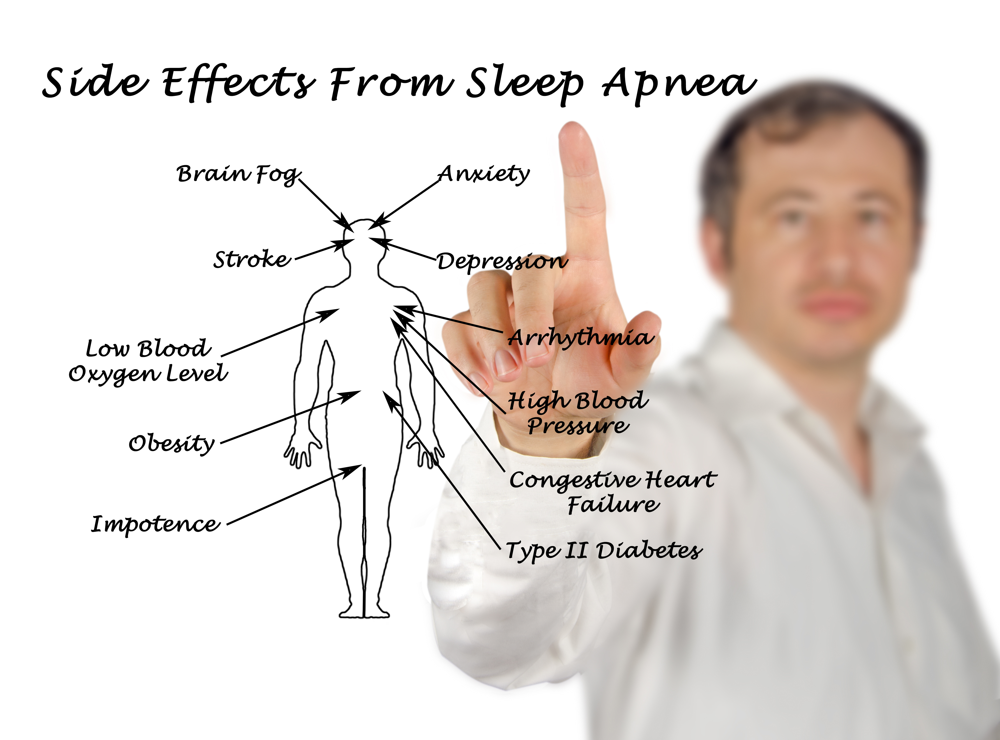

Primary Care

A primary care physician, or PCP, is considered your main doctor. They are responsible for dealing with the majority of your health care issues. Depending on the type of health insurance you have, your insurer may require you to have a PCP.
You’ll go to your PCP for your yearly physical exam and preventive health care. She will help you determine any medical concerns you’re at risk for developing in the future. She will also give you advice on ways you might be able to prevent those problems or decrease your risk.
Sleep Medicine


Doctors that specialize in sleep disorders (insomnia, sleep apnea, etc) and their treatment are “Board Certified” in sleep medicine. They often have other, related, medical specialties as well, including pulmonology
Sleep disorders may be caused by physical, environmental and/or emotional factors. Insomnia (trouble falling or staying asleep), sleep apnea and restless leg syndrome are among the more common problems patients can experience, but certainly not the only ones. As with all medical conditions, accurate diagnosis is the key to prompt, effective treatment.

Pulmonary Medicine
Pulmonary medicine deals with many diseases and conditions, including: ARDS (acute respiratory distress syndrome), asthma, COPD (chronic obstructive pulmonary disease), cystic fibrosis, interstitial lung disease, lung cancer, lung transplants, occupational lung disease, pulmonary hypertension, pulmonary tuberculosis